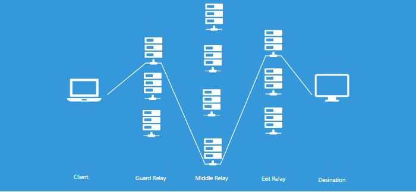
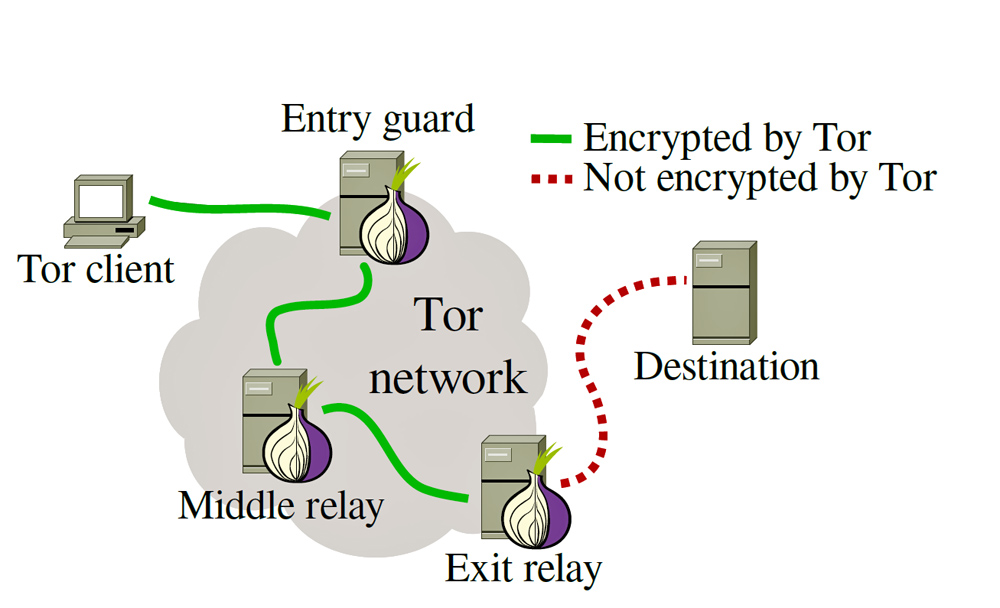
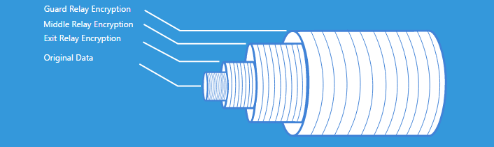

T
R under the hood
Agenda
- What is TOR?
- Short history
- How does it work?
- Risks & threats?
- Hidden services
What is TOR?
"Tor is an anonymity tool used by those who want to stay private and uncensored when browsing the Internet."Jordan Wright Blog
TOR:
- protects your privacy and identity on the internet
- keeps your location unknown for any websites and other services
- prevents other people to watch your traffic locally
- makes your habits and interests unknown for any websites
- protects from traffic analysis
TOR
Short introduction :)Agenda
- What is TOR?
- Short history
- How does it work?
- Risks & threats?
- Hidden services
Agenda
- What is TOR?
- Short history
- How does it work?
- Risks & threats?
- Hidden services
How does TOR work?
The Tor software depends on the Tor network, which is made up of Tor relays operated by individuals and organizations all over the world. The more Tor relays we have running, the faster, more robust, and more secure the Tor network will be.TOR CHALLENGE
How does TOR work?
 Image sourceTOR parts
- Entry/Guard Relay
- Middle Relay
- Exit Relay
- Bridges*
Tor structure
 Image sourceEntry guards
They are the entry points to the Tor network
Each Tor client selects a few relays at random to use as entry points, and uses only those relays for her first hop.
Middle relays
They transport traffic from the guard relay to the exit relay
This prevents the guard and exit relay from knowing each other.
Exit relays
The final relay that Tor traffic passes through before it reaches its destination
They are ran by volunteers
Bridges
Unpublished entry relays
Users that are behind censored networks can use bridges as a way to access the Tor network.
TOR relays
Each of the nodes can only see the data and the IP address of the node in front and the node behind it. Therefore, no one can find out the complete path between your computer and the website you are connecting to at any point. Additionally, each completed path is good for only 10 minutes, and then new random paths are generated.
FROM HOTSPOT SHIELDWhy onion?
 Image sourceTOR encryption
Internet data packet consists of:
- Header for routing
- Payload
TOR encrypts data packet when it enters the Tor network.
Regular Internet connections don't do this.TOR encryption
Each relay decrypt only a piece of an information to know which relay the data came from, and which relay to send it to next.
TOR keys
- Encryption
- Authentication
- Coordination
Encryption
- All connections in Tor use TLS link encryption
- Only the exit relay can read the cells
Authentication
- Every Tor relay has a public decryption key called the onion key
- Each relay rotates its onion key once a week
Coordination
- Each relay has a long-term public signing key called the identity key
- Each directory authority additionally has a directory signing key
- The directory authorities provide a signed list of all the known relays, and in that list are a set of certificates from each relay (self-signed by their identity key) specifying their keys, locations, exit policies, and so on.
- The only way to trick users into using a fake Tor network is to give them a specially modified version of the software
TOR vs. proxy?
Proxy:
- Users enter and leave through the same server
- Public and private proxies; private more stable
- Protects only a browser, not your traffic in the Internet
- Most of them know your IP address
TOR vs. VPN
VPN:
- Masks your IP address and encrypts your internet traffic
- Acts as a proxy to connect to your desired website on your behalf
- Website that you connect to can only see the IP address of the VPN server, not yours
- All your internet traffic is encrypted
- Neither ISP nor hackers can snoop your activity or steal your private information
Agenda
- What is TOR?
- Short history
- How does it work?
- Risks & threats?
- Hidden services
Risks & threats
- Exit relays
- Active content
- Full anonymity?
- Internet blacklist
Exit relays
- Your traffic can be monitored there if you don't use HTTPS
- Malware
- SMTP without TLS may cause privacy leaks
- Without HTTPS your login, password, session cookie etc. can be captured
Attacks
It is possible for an observer who can view both you and either the destination website or your Tor exit node to correlate timings of your traffic as it enters the Tor network and also as it exits. Tor does not defend against such a threat model.
Active content
Java, Javascript, Adobe Flash, Adobe Shockwave, QuickTime, RealAudio, ActiveX controls, VBScriptSome sites require third party browser plugins such as Flash. Plugins operate independently from Firefox and can perform activity on your computer that ruins your anonymity. This includes but is not limited to: completely disregarding proxy settings, querying your local IP address, and storing their own cookies.
Full anonymity?
NOVirtual machines may have the ability to ignore your configured proxy settings, and therefore bypass Tor and share information directly to other sites on the Internet. The virtual machine may be able to store data, such as cookies, completely separate from your browser or operating system data stores. Therefore, these technologies must be disabled in your browser to use Tor safely.
Black list
You go there, if the node is involved in illegal activities
Agenda
- What is TOR?
- Short history
- How does it work?
- Risks & threats?
- Hidden services
Hidden services
A .onion address points to a Tor hidden service, which is a server you can only access through Tor. This means that your browsing activity can’t be snooped on by someone watching the Tor exit nodes.
For example, Facebook maintains an official Tor hidden services address at “https://facebookcorewwwi.onion/”. This allows you to access Facebook through Tor, and your connection doesn’t ever leave Tor where it can be snooped on.
FROM HOW TO GEEK